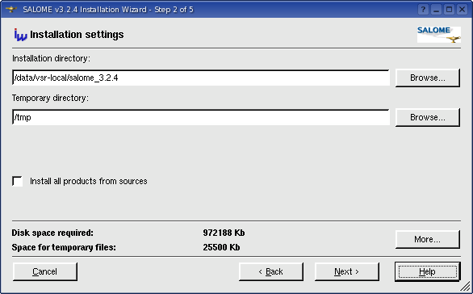
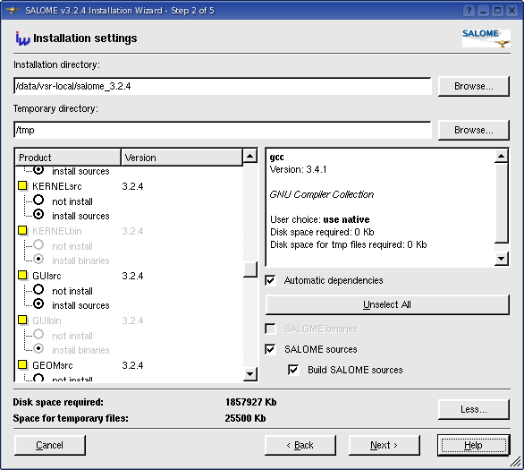
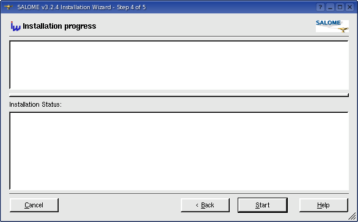
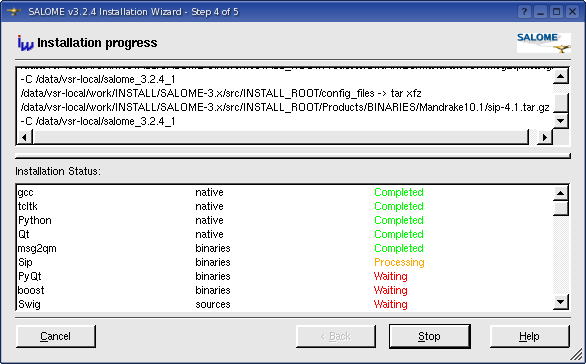
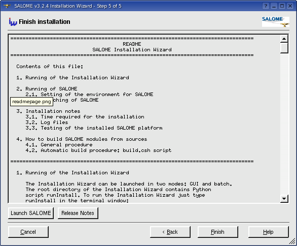

|
|
SALOME Installation Wizard Help |
[ python ] runInstall [options]
Without options this script will launch
the SALOME Installation Wizard in the default mode (GUI).
The default installation settings can be overridden by using command line
options. Each option has a short and a long notation:
-g / --gui
-b / --batch
-f FILE / --file=FILE
-d DIR / --target=DIR
-t DIR / --tmp=DIR
-a / --all-from-sources
-h / --help
-v / --version
The installation procedure supports different
Linux platforms and installs various installation 3d-party
prerequisite products which are required by SALOME platform. As it was
mentioned above, the basic target platform for SALOME 3.0 and newer is
Linux Mandrake
10.1.
Use of configuration XML files gives a flexible way to modify the list
of products to be installed by the Installation Wizard without changing
the program source code. Just create your own XML configuration file and
implement installation scripts for the prerequisite products you need
and then use this XML file with the Installation Wizard. This can be done,
for example, for some Linux
platform which is not supported
directly by the Installation Wizard. See Modifying XML configuration file and Implementing
installation scripts for the new products
sections for more information.
The Installation Wizard GUI has been developed using Trolltech's Qt 3.0.5 toolkit. After launching the Installation Wizard in the GUI mode the wizard window is shown to the user. This wizard guides the user through several subsequent pages. To navigate between the pages use "Next" and "Back" buttons in the lower part of the wizard window. The "Cancel" button closes the wizard window and quits the installation procedure after the user's confirmation. The "Help" button opens an additional window to show help information.
The first "Introduction" page is shown in Figure 1. Skip this page by clicking "Next":
Figure 1: "Introduction" page
In the second page you are proposed to
enter the target directory where the SALOME platform should be installed
to. You can also click "Browse..." and choose the destination folder using the
standard browse directory dialog box.
If the directory you want to install products to does not exist you are
prompted to confirm directory creation. If you type a wrong directory
path, or if you do not have write permissions for the directory you use,
the corresponding message box is shown.
You can also change the temporary directory
(which is used to store temporary files required for the installation).
In the bottom part of the window the total disk space required for the
installation and for the temporary files is displayed (see below for more
details).
In the GUI mode the Installation Wizard provides two different options to install the SALOME platform: basic (default option) and advanced. In the basic mode the user should enter the target installation directory and temporary folder. All other installation options are taken from the XML configuration file (see Fig.2):

Figure 2: "Installation settings"
In addition, you have a choice to use "Install all products from sources" check box. If this option is turned on, all the products will be installed from the sources (using their own build procedures). This check box corresponds to the --all-from-sources (-a) option of the runInstall script (see here).
 Installation of all products from sources is a long-time operation.
Installation of all products from sources is a long-time operation.
To switch to the advanced option, click "More..." (see Fig.3 ).
In the advanced mode you have a possibility
to select products to be installed. Each product can have several options
of installation: you have a possibility to use the native product (provided
with Linux distribution and installed in the system folders), install
already precompiled binaries, build the product from sources or not install
it at all. Available options and default option are taken from the XML
configuration file. You can mark the products you want to install by clicking
the corresponding radio-buttons in the list view in the left part of the
page.
Note, that some products may require some other pre-requisite products
to be installed (or these prerequisite products should be already available
on your computer). The installation procedure has a special feature to
automatically mark these products in the list view. For example, in order
to install PyQt it is necessary to have gcc,
Python, Qt
and Sip installed. Therefore all these products will
also be turned
on when you check on PyQt. This feature can be switched off by clicking
the "Automatic dependencies" checkbox. Turn on this checkbox if you want
all prerequisite products to be automatically checked when you select
some product to be installed. Turn off this checkbox if you want to disable
this feature.

Figure 3: "Installation settings" page in the 'advanced' mode
If you want to use native products (like
gcc, tcl, etc.), select "use
native" option.
Special button in the right part of the page - "Unselect
All" - allows to reset
quickly all products to the "not
install" state.
There are also two checkboxes on this page: "SALOME sources" and "SALOME binaries". These three-state checkboxes allow quick selecting/unselecting sources/binaries packages of SALOME modules for installation.
In addition, when some SALOME sources
are selected, one more check box becomes available: "Build
SALOME sources". If this option
is turned on, the selected SALOME modules will be built and installed
from sources.
If this check
box is turned on, the corresponding SALOME module binaries package installation
is disabled, because of SALOME
module sources and binaries packages conflict (see
Fig. 4 below).

Figure 4: "Build SALOME sources" check box usage
The box at the right side of the page displays the information about currently highlighted product: name, version and short description, required disk space, disk space required for temporary files, list of prerequisites (this information is provided in the XML file) and current user choice.
The "Disk space required:" field displays how much disk space on the hard drive is required for installation of selected products.Please,
take into account that the displayed amount of required disk space is
approximate and may differ when you install products on your hard drive.
The installation procedure uses a special
directory to store temporary files. The "Space
for temporary files:" field
shows the information about required disk space on the hard drive for
extracting and compiling the selected products. You can change the temporary
directory - just type a path to the folder you want to use or click on
the corresponding "Browse..." button.
Actually,
temporary files are not stored directly in the directory entered by the
user. The Installation Wizard creates an additional folder in this directory
named something like INSTALLWORKXXXXX where XXXXX is a unique number. This allows
to launch several Installation Wizards simultaneously. This temporary
directory is removed automatically when the installation finishes.
The installation procedure also checks the available disk space. If there is not enough disk space on your hard drive you will see a corresponding error message box.
You are strongly recommended not to use directory names containing
spaces. Otherwise you can experience
some troubles with the installation.
To proceed further click "Next". At this moment the program will make some tests to check installation settings: if there is enough disk space on the hard drive, check for native products installation, dependencies (prerequisites) for each product you have selected to be installed. If any test fails you will see the corresponding warning message box. Otherwise the wizard will proceed to the next page:

Figure 5: "Check your choice" page
This page summarizes the installation
options you've made on the previous pages. You can check again your choice
and change it if necessary by getting back to the previous page.
When you are sure that everything is OK, click "Next" to follow to the next page.

Figure 6: "Installation progress" page
To start installation of the selected products click "Start". It launches the shell installation script and you will be able to see the output of the script in the dialog topmost frame. If any errors occur during the installation progress the corresponding messages will be printed to the log window in bold red font.
It is possible to break the installation at any time by clicking "Stop". Then you can get back to the previous pages if you wish to change installation settings or restart installation by pressing again "Start" button.
In the current implementation
it is not possible to resume the stopped installation process; it will
be re-started from the very beginning.

Figure 7: "Installation progress" page: installation in progress
The "Installation Status" frame window shows you the progress of installation. "Waiting" status means that installation of this product has not been started yet. The product currently being installed is marked as "Processing". All installed products have "Completed" status.
You can abort installation and close the installation procedure using "Cancel" button.
This button sends the signal "SIGTERM" to the
shell script. The script tries to clear all temporary files. The process
of removing temporary files can take some time, so the installation wizard
will wait 3 seconds before closing.
At the end of installation (all selected products have been installed successfully) you can go back to the previous pages to start a new installation or click "Next" to go the Readme page:

Figure 8: "Finish installation" page
In this page you can read important information
about the Instalation Wizard itself and some tips: how to run and test
SALOME or how to build SALOME from the sources. This is the contents of
the README file which you can find in the root directory of the Installation
Wizard.
You can also launch SALOME Desktop from this page or read the Release Notes
file by clicking on the corresponding buttons in the lower part of the
page (see here and here for more information about customizing these
buttons).
To launch the Installation Wizard in
the batch mode use -b (--batch) parameter.
In this mode the GUI wizard is not shown but all the installation status
is displayed directly in the console. In the batch mode the user does
not have a possibility to change installation settings which are given
in the configuration file, except target and temporary directories which
can be overridden by the corresponding command line options.
The only exception is --all-from-sources (-a) option which enables special installation mode
in which all the products (including SALOME modules) are installed from
sources, ignoring the default mode defined in the XML configuration file
(see here for details).
Figure 9: Batch mode
During the process of installation the script creates some environment files to simplify the procedure of launching SALOME. These shell scripts set all necessary environment variables for all products you have installed. To learn how installation scripts collects the environment, see here. These files are: salome.csh + salome.sh in the KERNEL module sources and KERNEL module binaries root directories and env_products.csh + env_products.sh and env_build.csh + env_build.sh in the target installation directory.
Note:
there is some difference between these files: env_build.* files are optimized to be used for building
SALOME modules from sources (see README
file provided with the installation
procedure on the CD). The env_products.* (and
salome.*) files are optimized for
SALOME launching. The behavior is defined by the environment variable ENV_FOR_LAUNCH which is set to 0 in env_build.* files and to 1 in env_products.* (salome.*) files.
Note:
the information given in this section refers to the prerequisite products
for SALOME version 3.2.4.
Note: netgen 4.5
provided with the SALOME installation Wizard has been patched to improve
its performance.
If you have native products installed to directories different from default ones (not /usr/bin, /usr/lib...), it is recommended to follow the above mentioned instructions. Or you should properly set PATH and LD_LIBRARY_PATH variables before starting the Installation Wizard. Otherwise the installation script will fail to find preinstalled/native products.
Note: for some native products (e.g. gcc, Python)
the rules of version checking are not so strict as described above. Only
major and minor version numbers should coincide with the prerequisite.
Newer version of the product can also be used. If some native product
has version number larger than that required by the installation procedure,
the user will be prompted by the warning message like this: "You have newer version of gcc installed
on your computer than that is required (3.4.1). Continue?". You can click "Yes" to proceed with the installation but in this
case you should be aware of what you are doing. SALOME binaries (including
other products) are compiled with the predefined prerequisites and most
likely can not be run successfully if these products are not found. This
can be helpful only if you plan to build all products from sources.
After installing each product shell the script creates a special environment file for the product in its installation folder. The name of the file is generated from the name of product by the following scheme: env_<product_name>.sh (for example env_Vtk.sh for the Vtk). This file includes all necessary environment settings. At the final step of the installation the script picks up all the settings files and generates two common environment files from them: salome.sh and salome.csh for bash and csh shells correspondingly. Such approach helps to save time when reinstalling products and you may not bother about setting all environment variables manually to build/launch SALOME. What you simply need is to source one of these environment files.
This also concerns those products which
are not being installed. For example, you install some SALOME binaries
to the directory where you have previously installed other products.
The Installation procedure tries to collect environment files from the
target directory if it finds necessary products installed there. If some
product is not found in the target directory the corresponding section
of salome.sh/salome.csh files will be skipped.
For native products (like gcc,
tcl, etc...) the installation
procedure tries to find them first using PATH / LD_LIBRARY_PATH variables and then in the system default directories
(/usr/bin, /usr/lib etc., depending on the product).
In any case you may edit salome.* files after the installation procedure finishes, if you want.
Note:
as it was mentioned above there are other environment files which are
generated by the installation procedure: env_products.csh + env_products.sh and env_build.csh + env_build.sh. These files can be found in the target installation
root directory.
<document>
[ <config [ version=<install_wizard_version>
]
[
caption=<install_wizard_caption> ]
[
copyright=<install_wizard_copyright> ]
[
license=<install_wizard_license_info> ]
[
os=<target_platform> ]
/>
]
[ <path [ targetdir=<target_directory>
]
[
tempdir=<temp_directory> ]
/>
]
[ <button label=<button_label>
[ tooltip=<button_tooltip> ]
script=<button_script>
[ disable=<disable_flag> ]
/>
]
[
<button
...
/>
]
[
<product
name=<product_name>
version=<product_version>
[ context=<product_context>
]
[ description=<product_description>
]
install=<installation_mode>
supported=<supported_installation_modes>
[
disable=<disable_flag> ]
[ pickupenv=<pickup_env_flag>
]
dependancies=<list_of_prerequisites>
installdiskspace=<install_disk_space>
temporarydiskspace=<tmp_disk_space>
script=<installation_script_name>
/>
]
[
<product
...
/>
]
...
</document>
If this optional flag has 'true' value, the corresponding button will not appear in the "Finish installation" page - the section of XML file is silently ignored.
Note:
If you add new products to be installed with Installation Wizard, you
should also provide installation script for this product. See the next
section for more details.
where
<product_script_name> - installation script name (described in the
configuration xml file);
<function_name> - the name
of function, corresponding to the selected installation mode: try_native, install_source, install_binary or try_preinstalled;
<temp_folder> - temporary
files directory;
<products_directory> -
directory where the sources/binaries package can be found. You should
provide the sources package in the <Install_Wizard_root_directory>/Products/SOURCES directory and binaries package in the <InstallWizard_root_directory>/Products/BINARIES/<os_version>, where <os_version> is the target platform
description, which appears in the corresponding section of the configuration xml file.
<target_directory> - root
target directory where the product should be installed to;
<dependancies> - single-quoted
list of prerequisite products, separated by space;
<product_name> - product
name itself.
Example:
med-2.2.3.sh install_binary /tmp/work ./Products/BINARIES/Mandrake10.1
/usr/salome 'gcc Hdf' med
Copy the created script into the <Install_Wizard_root_directory>/config_files sub-directory where all installation scripts are stored. Installation Wizard will automatically search and call your script during the installation procedure.
where
<product_script_name> - the script name itself (retrieved from the
XML configuration xml file);
<function_name> - the name
of function;
<target_directory> - root
target directory where the product is installed to;
<temp_folder> - temporary
files directory;
Note: The standard Installation Wizard buttons "Launch
SALOME" and "Release Notes" are implemented with this feature.
Refer to scripts start_salome.sh and release_notes.sh for sample implementation.
Note: Any button (even standard) can be ignored by
the Installation Wizard if the attribute <disable> in the XML configuration file is set to the
"true" value.